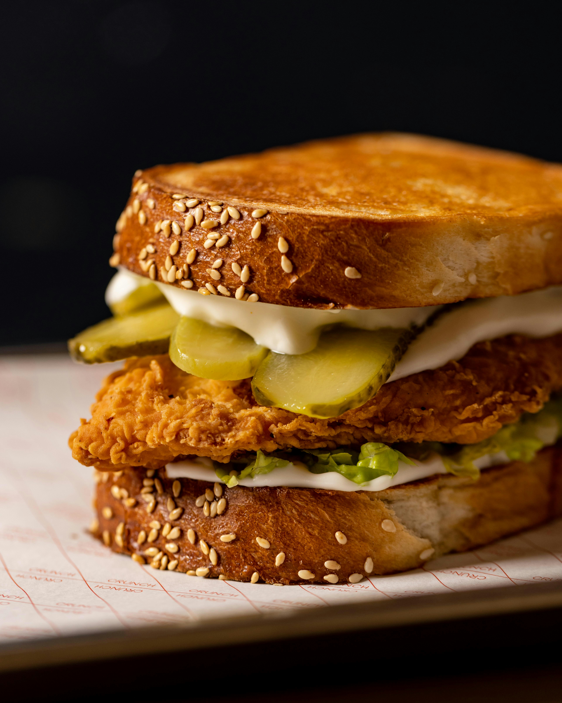

Chicken Sandwhich
Home

Description
Best form of sandwhich
Ingredients
- Boneless skinless chicken breast/thigh
- Yoghurt
- Rising flour
- Pickles
- Bread(brioche buns, sliced white bread, etc..)
- mayo
Ingredients like salt, oil, and black pepper are always assumed to be available
Steps
- prep your chicken making sure it is "Sandwhich sized"
- brine your chicken for at least an hour(ideally overnight) in salted water(you can use pickle juice here)
- after brining cozat the chicken with yoghurt and a bit of the brine juice
- add salt and black pepper to the flour
- dredge the chicken in the flour
- in preheated oil enough to deep fry, fry your chicken till it's golden brown
- toast your buns/bread and assemble your sandwhich